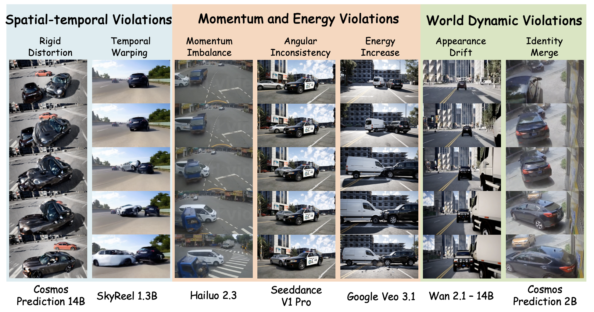
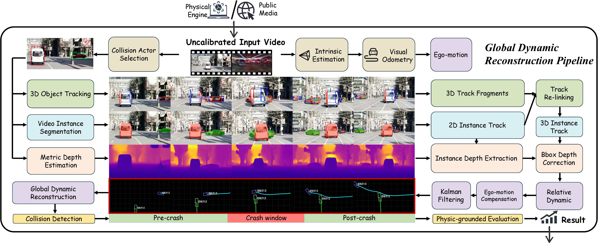
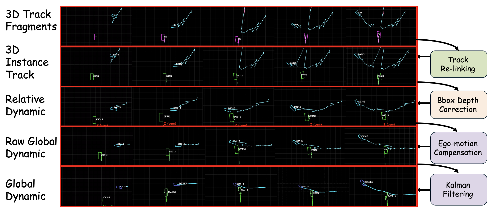
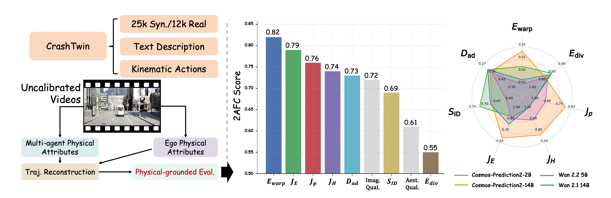

Rigid distortion Cosmos-Predict2-14B
CrashTwin: A Physics-Grounded Benchmark for Multi-Agent Dynamics in World Models
1Texas A&M University 2University of Minnesota 3Yale University 4University of Texas at Austin 5NVIDIA 6Stanford University
Abstract
Generative world models hold immense promise as scalable simulators for autonomous systems, particularly for synthesizing rare but safety-critical multi-agent interactions, such as vehicle collisions. However, current evaluation paradigms index heavily on visual fidelity and semantic alignment, leaving a critical blind spot: they cannot reliably quantify whether generated dynamics actually obey the fundamental physical laws required for reliable simulation. Assessing this physical plausibility is inherently difficult due to a lack of grounded metrics and the challenge of extracting metric-scale kinematics from uncalibrated video rollouts. To bridge this gap, we introduce CrashTwin, a physics-grounded evaluation framework designed to stress-test the physical trustworthiness of world models. CrashTwin couples a diverse dataset of 25K controllable synthetic and 12K in-the-wild collision sequences with a novel calibration-free reconstruction pipeline, enabling the recovery of 3D physical attributes directly from monocular generations. We propose a diagnostic suite that systematically evaluates three dimensions: spatio-temporal consistency, momentum and kinetic energy conservation, and world-dynamics integrity. Extensive benchmarking of state-of-the-art models reveals a crucial insight: high perceptual quality frequently masks severe physical violations during complex interactions. By quantitatively exposing these failure modes, CrashTwin provides a vital diagnostic tool for developing physically grounded world models capable of reliable real-world simulation.
Physical Failure Modes
Representative spatio-temporal, momentum and energy, and world-dynamics violations observed across recent world models.

CrashTwin Pipeline
CrashTwin connects scenario design, monocular reconstruction, global dynamic recovery, and physics-grounded evaluation.

CrashTwin Dataset
25.6K
controllable synthetic crashes
12.6K
in-the-wild accidents
3
diagnostic metric families
7
representative collision topologies
Physics-Grounded Metrics
Spatio-Temporal Consistency
Ewarp measures flow warping error for temporal coherence.
Ediv measures normalized flow divergence for near-rigid motion.
Momentum & Energy Conservation
Jp captures linear momentum residual.
JH captures angular momentum residual.
JE penalizes kinetic energy gain.
World-Dynamics Integrity
SID measures instance identity stability.
Dad measures appearance-drift distance.
Global Dynamic Reconstruction
A calibration-free pipeline converts fragmented monocular tracks into globally consistent, metric-scale collision dynamics.


Metric-Human Alignment & Model Comparison
Physical metrics align with human judgments and expose substantial physical inconsistency across current world models.

Benchmark Evaluation Leaderboard
Lower is better unless marked with an upward arrow.
| Models | Spatio-temporal Consistency | Momentum & Energy Conservation | World-dynamics Integrity | ||||
|---|---|---|---|---|---|---|---|
| Ewarp ↓ | Ediv ↓ | Jp ↓ | JH ↓ | JE ↓ | SID ↑ | Dad ↓ | |
| Open-Source Models | |||||||
| SkyReel-1.3B | 0.0227 | 0.6103 | 0.9566 | 0.9628 | 0.9457 | 0.6660 | 0.3592 |
| Wan 2.1-14B | 0.0179 | 0.6320 | 0.8235 | 0.8494 | 0.7864 | 0.6760 | 0.3117 |
| Wan 2.2-5B | 0.0145 | 0.5959 | 0.8899 | 0.8975 | 0.8649 | 0.7254 | 0.3109 |
| Cosmos-Predict2-2B | 0.0240 | 0.6748 | 0.8890 | 0.8954 | 0.8590 | 0.6129 | 0.3462 |
| Cosmos-Predict2-14B | 0.0117 | 0.7180 | 0.6828 | 0.7629 | 0.6047 | 0.6737 | 0.3327 |
| Proprietary Models | |||||||
| Google Veo 3.1 | 0.0097 | 0.6202 | 0.7743 | 0.8011 | 0.7460 | 0.7232 | 0.3075 |
| Hailuo 2.3 | 0.0151 | 0.6143 | 0.7664 | 0.7812 | 0.7285 | 0.6203 | 0.2968 |
| Seedance V1 Pro | 0.0166 | 0.6130 | 0.7725 | 0.7837 | 0.7209 | 0.6007 | 0.3002 |
Effect of Post-Training
Physics-oriented post-training improves all diagnostic metric families on Cosmos-Predict2-2B.
| Model Variant | Ewarp ↓ | Ediv ↓ | Jp ↓ | JH ↓ | JE ↓ | SID ↑ | Dad ↓ |
|---|---|---|---|---|---|---|---|
| Base (w/o post-training) | 0.0240 | 0.6748 | 0.8890 | 0.8954 | 0.8590 | 0.6129 | 0.3462 |
| Base (w/ post-training) | 0.0085 | 0.6279 | 0.6479 | 0.7296 | 0.5534 | 0.7746 | 0.2953 |
| Ground Truth | 0.0075 | 0.6549 | 0.3089 | 0.4620 | 0.2502 | 0.8010 | 0.2819 |
Video Gallery
Physical Violation Clips
Temporal warping SkyReel-1.3B
Momentum imbalance Hailuo 2.3
Angular inconsistency Seedance V1 Pro
Energy increase Google Veo 3.1
Appearance drift Wan 2.1-14B
Identity merge Cosmos-Predict2-2B
Global Dynamic Reconstruction Results
Reconstruction Case 1
Reconstruction Case 2
Reconstruction Case 3
Cosmos-Predict2-2B Post-Training
Scene 1
Ground truth
Baseline
Post-trained
Scene 2
Ground truth
Baseline
Post-trained
Scene 3
Ground truth
Baseline
Post-trained